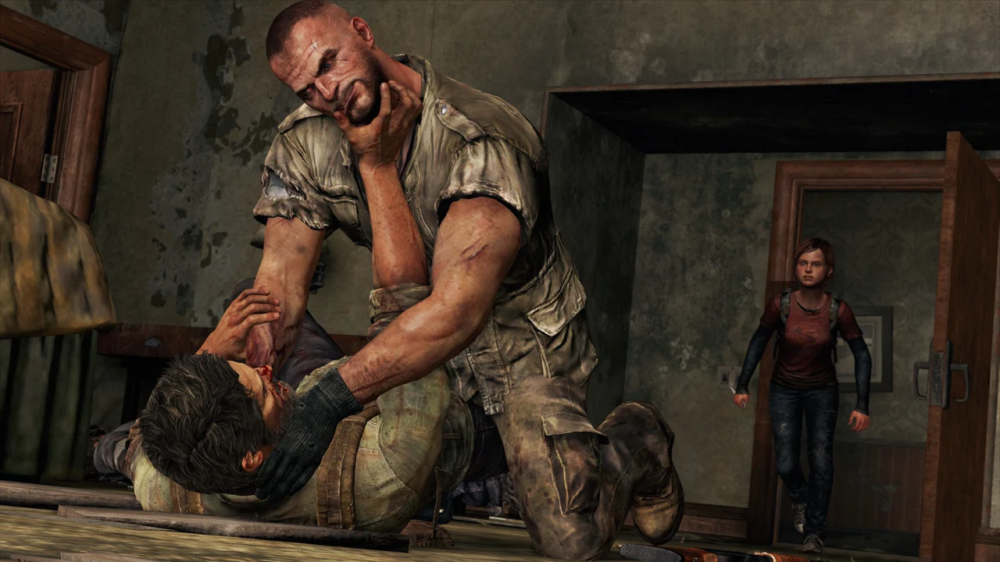
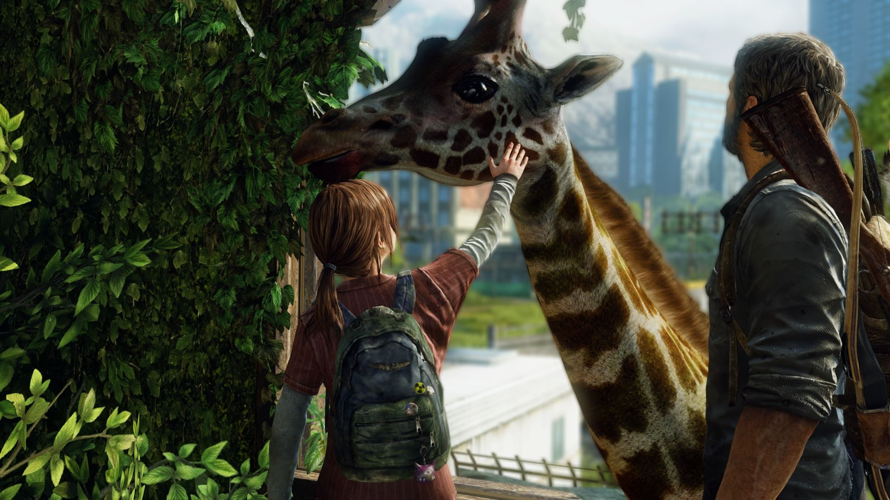
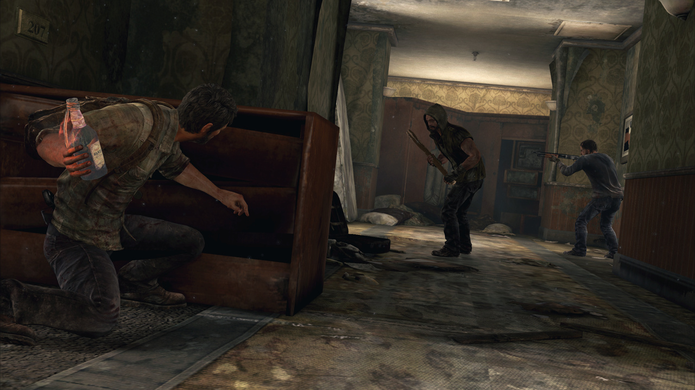
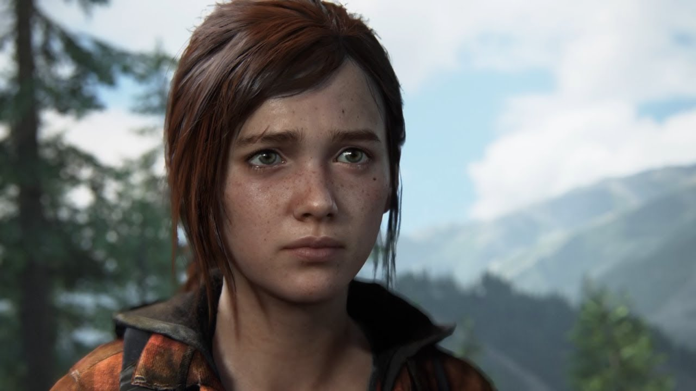
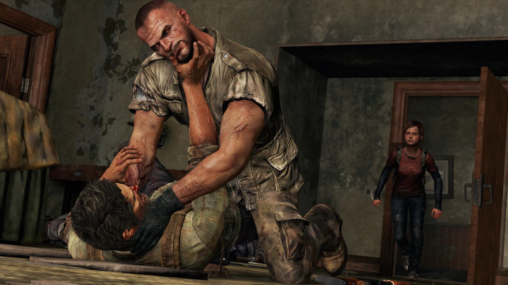
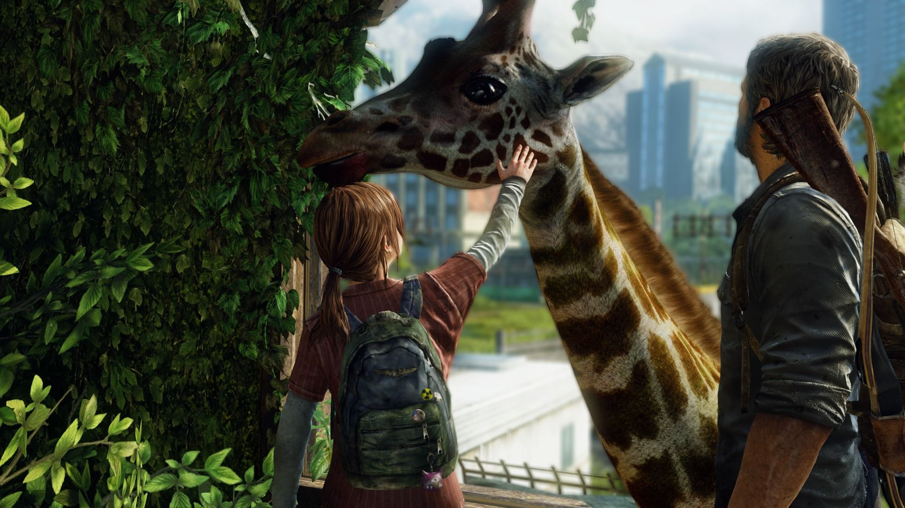
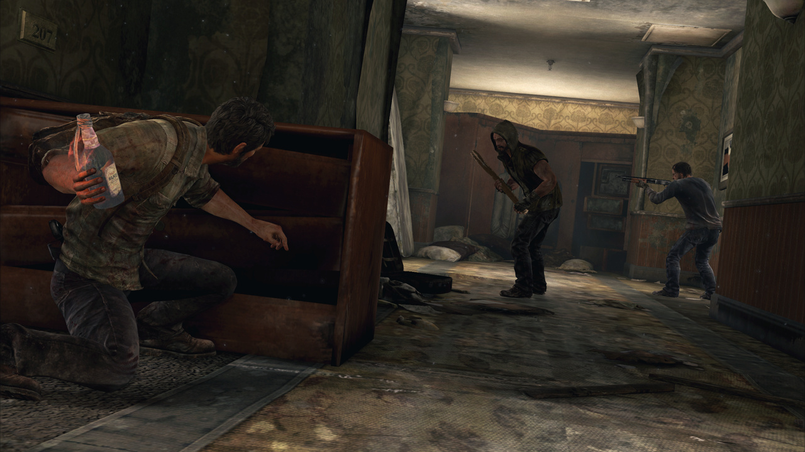
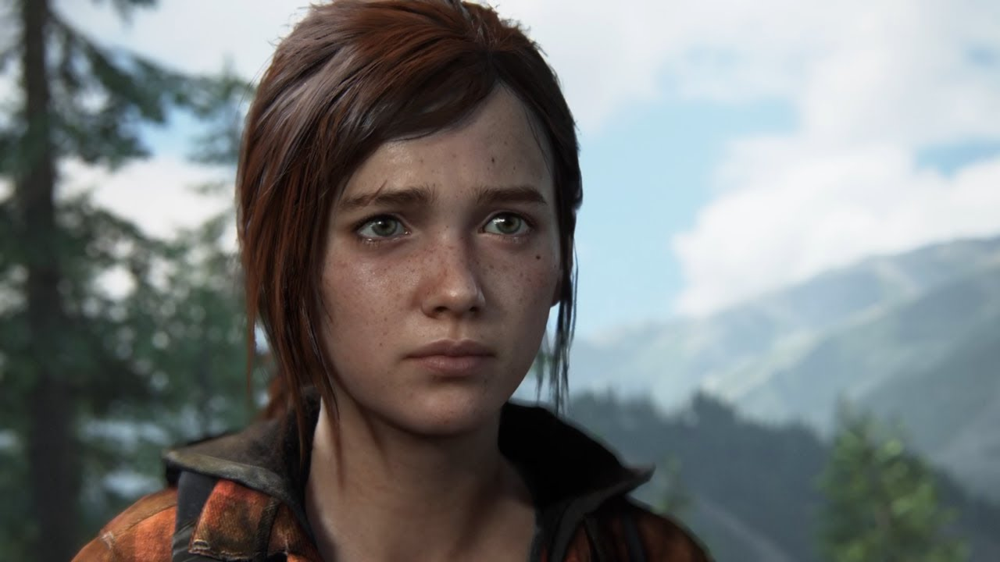

"The Last of Us" é um jogo eletrônico de ação-aventura lançado em 2013 para o PlayStation 3 e que se tornou um marco na indústria de jogos. O jogo é ambientado em um mundo pós-apocalíptico devastado por uma pandemia que transformou a maioria da população em seres agressivos e violentos, conhecidos como "Infectados".
O jogador controla Joel, um sobrevivente amargo e experiente que perdeu tudo o que tinha e que agora vive como contrabandista em um mundo onde a lei e a ordem já não existem mais. A história começa vinte anos após a pandemia ter devastado o mundo, e Joel é contratado para contrabandear uma menina chamada Ellie, que é imune à doença que causou a pandemia, para uma organização que busca uma cura.
Ao longo da jornada, Joel e Ellie enfrentam diversos obstáculos e perigos, incluindo outros sobreviventes que estão dispostos a matar para sobreviver. O jogo é marcado por uma atmosfera tensa e angustiante, com um mundo hostil e perigoso cheio de ruínas, zonas de quarentena militar e lugares abandonados que podem esconder perigos mortais.
A história é contada de forma envolvente e emocionante, com diálogos e interações realistas entre os personagens, explorando temas como sobrevivência, amor e sacrifício. Joel e Ellie desenvolvem uma relação complexa e afetuosa ao longo do jogo, aprendendo a confiar um no outro e a se ajudar mutuamente para sobreviverem em um mundo hostil.
O jogo também é marcado por uma jogabilidade desafiadora, com combates intensos e furtivos contra inimigos humanos e infectados, além de puzzles e desafios de plataforma. A mecânica de crafting e gerenciamento de recursos também é uma parte importante do jogo, já que o jogador precisa coletar itens e equipamentos para criar armas e itens de cura.
"The Last of Us" recebeu aclamação da crítica e do público, elogiado pela sua narrativa envolvente, personagens bem desenvolvidos, gráficos impressionantes e jogabilidade desafiadora. O jogo também ganhou vários prêmios, incluindo o prêmio de Jogo do Ano no The Game Awards de 2013, consolidando-se como um dos jogos mais marcantes e emocionantes da última década.